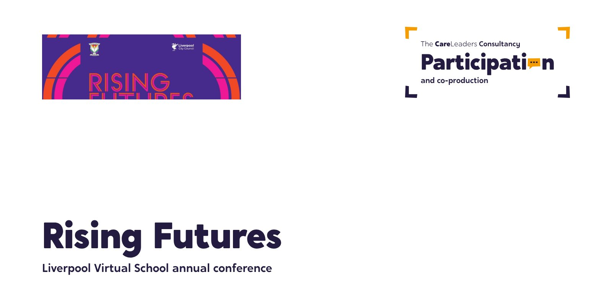
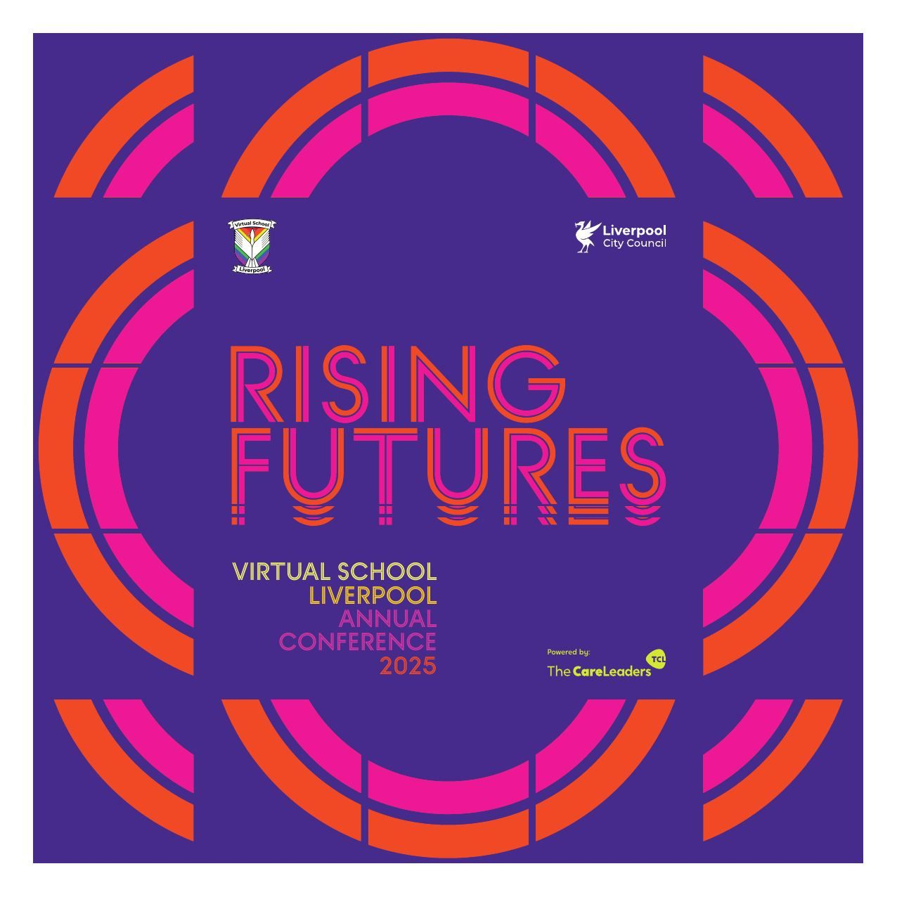

Liverpool Virtual School: a conference young people helped build
Delegates at Liverpool’s 2024 conference asked to hear from young people directly, not just about them. For 2025 the Virtual School asked us to help produce Rising Futures, and young people designed and ran part of the day themselves.



The starting point
Liverpool Virtual School runs an annual conference for the headteachers, designated teachers, social workers and partners who support children in care across the city. The 2024 theme was EmpowerED. For 2025 the Virtual School wanted to move on to aspiration, and in March it asked us to help produce the day: branding, bookings, the programme and the materials delegates would take away.
What we heard
The Virtual School shared the feedback from its 2024 conference at the start. 50 people had filled in the evaluation, and the message about young people was consistent. Delegates had heard about young people’s work and wanted to hear from them in person. One asked for young people “at the event and sharing their thoughts and achievements.” That became the brief.
“As you are already planning - let the young people lead.”
What we did
- ListenThe briefBuilt from the 2024 feedback, with ideas from the Virtual School’s young people’s group
- DesignBrand and bookingsBranding, a booking campaign with a video invitation from Luke, and the agenda and speakers
- BuildTruly Understanding UsYoung people met every fortnight to create their own workshop; we wrote the brochure and slides
- Deliver19 June 2025Luke co-hosted with Lee Weston, a Care Leaders Fellow, and ran Tools for Schools
How we worked
Story
Real stories from care ran through the day, from the workshop young people designed to Jade Barnett’s keynote on her own connection to the care system.
Theory
Trauma, attachment and brain development, and cultural competency with young people from global majority backgrounds.
Tools
From Tools for Schools: profile reframing, de-escalation, and separating the reason from the behaviour, ready to use back in school.
Truly Understanding Us sat on the programme as a session in its own right, alongside the keynotes, with learning outcomes the young people set: what it means for children when they are not listened to, and new ways for adults to communicate with them.
What changed
Rising Futures put young people on the programme, not just in the conversation. After the day, the Virtual School asked us to help more of its staff sign up to The Care Leaders Online, and we ran an enrolment webinar in September 2025. Luke was back on the programme at the Virtual School’s HEARTS conference on 1 September 2025.

See the work
What we made, and what it looked like.
Young people’s workshop
Five young people designed and ran their own conference workshop.
Rising Futures
The delegate brochure and the day’s programme.
